다음 목적지 안내, 어떻게 이어지나
밭에서 시작해 수확을 끝내고, 마을로 나와 메인 퀘스트를 따라갑니다. 단계가 끝날 때마다 짧게 날아가 보여 주고 지도 핀으로 데려갑니다. 커밋 add369d8 · 321a1c2a, 배포 전.
모든 단계에서 똑같이 도는 4박자
0. 밭에서 시작 신규 웹·토스 전원
- 다 자란 당근 앞에서 시작기존
안내 카드 3장 → 🌾 말풍선이 익은 칸 위에서 통통
- 4칸 모두 거두기바뀜
예전엔 첫 칸에서 끝. 이제 말풍선이 다음 칸으로 옮겨 가며 4칸을 다 거둘 때까지 다른 창이 안 뜸
- 게스트 → 선물 / 로그인 → 바로 다음바뀜
게스트는 마지막 칸을 거두면 "첫 수확 축하해요! · 로그인하고 선물 받기". 닫거나 로그인하면 조작 투어로
- 🚪 마을로 나가기핀새로
목적지(나무)는 마을인데 밭 안이니, 밭 출구 위에 "🚪 나가는 문 9m". 예전엔 여기서 화살표가 아무것도 안 보였음
1. 마을 · 튜토리얼 (①~⑪)
- ② 나무 베기날아가 보기핀
마을에 나오는 순간 시네마틱 → "🪓 나무 11m". 주민과 5m 이상 떨어진 나무로
- ③ 상인 맞이하기핀고침
밭에서 나오면 상인이 당근을 사러 와서 대개 이미 끝남. 아니면 목재 5개까지 나무로 안내, 상인은 8초 안에 못 오면 내 옆으로
- ⑤ 집 바닥 깔기실험 쪽 안내 유지광고 자리 ①
동굴보다 먼저. 집 안내 50:50 실험이 끝날 때까지 새 안내는 끔
- ④ 동굴 탐험하기 → 돌 캐기날아가 보기핀
입구로, 안에선 가장 가까운 돌로
- ⑥ 벽 · ⑦ 밭 · ⑧ 지붕 · ⑨ 새 옷날아가 보기핀
집 터 · 텃밭 문 · 집 터 · 꾸미기 가게. 집 안·동굴에 있으면 출구부터
- ⑩ 무너진 다리 고치기날아가 보기핀
동굴 옆 무너진 다리 머리로. 도착하면 "다리 고치기" 버튼(🪵 10 · 🪨 5)
- ⑪ 다리 건너 할아버지 만나기날아가 보기핀
다리를 고치면 바로 다음 목적지로. 화살표가 고친 다리 머리를 먼저 가리키고, 건너가면 섬의 박물관 할아버지를 가리킴
2. 튜토리얼 밖 두 줄기
- 동굴 · 광부 의뢰석탄·승강기 날아가 보기
⚫ 석탄 3개 → ⛏️ 광부 → 🛗 승강기 → 1층 내려가면 끝
- 세계수 · 밭의 가지날아가 보기핀광고 자리 ②
세계수로 → 판이 밭 탭으로 열리고 추천 조합 → 칸이 모자라면 "빼고 다시 놓기"
실제 화면 번호 = 진행 순서
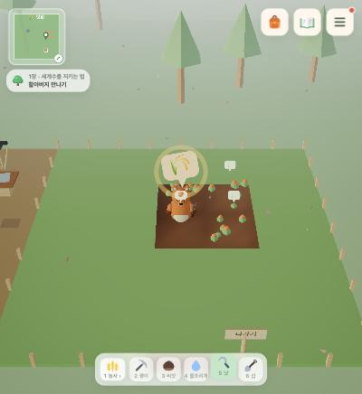
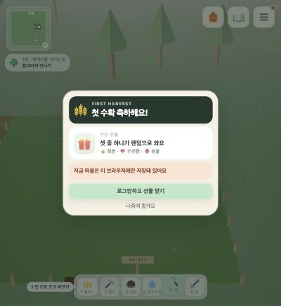
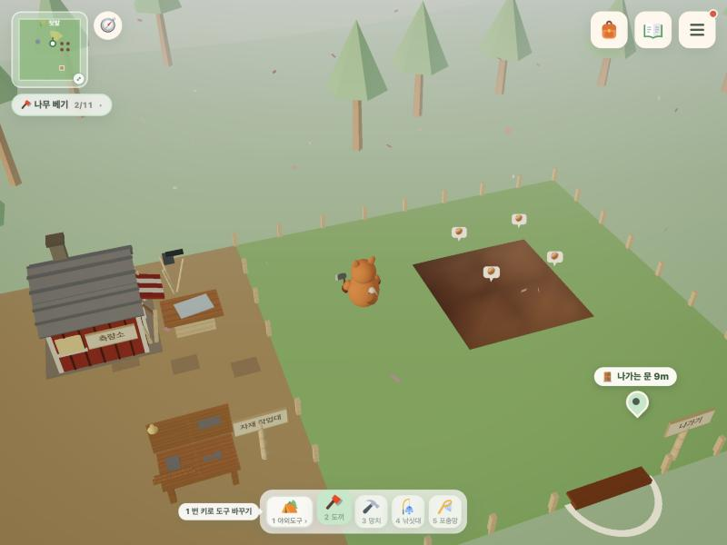
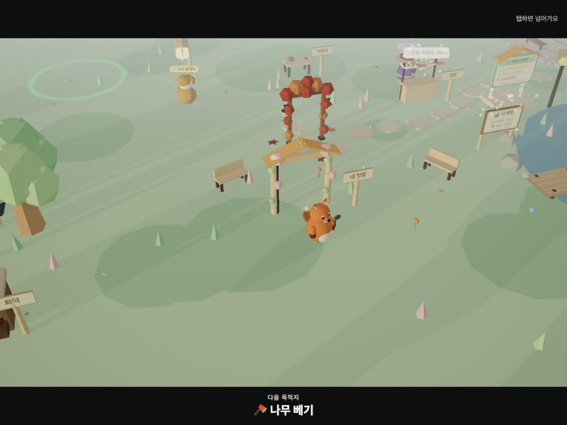
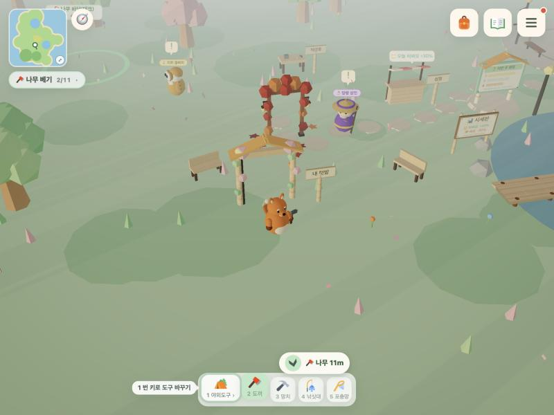
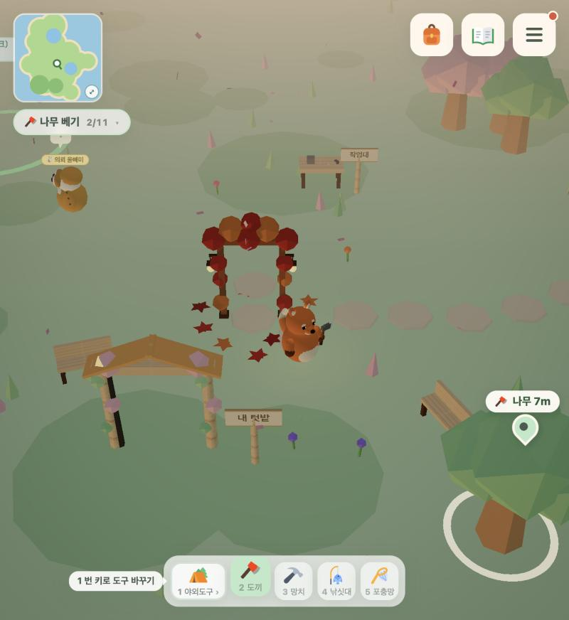
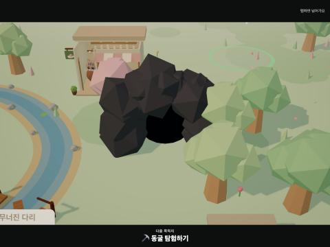
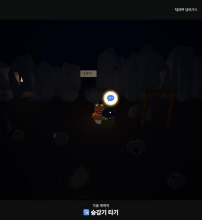
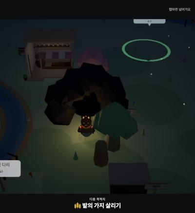
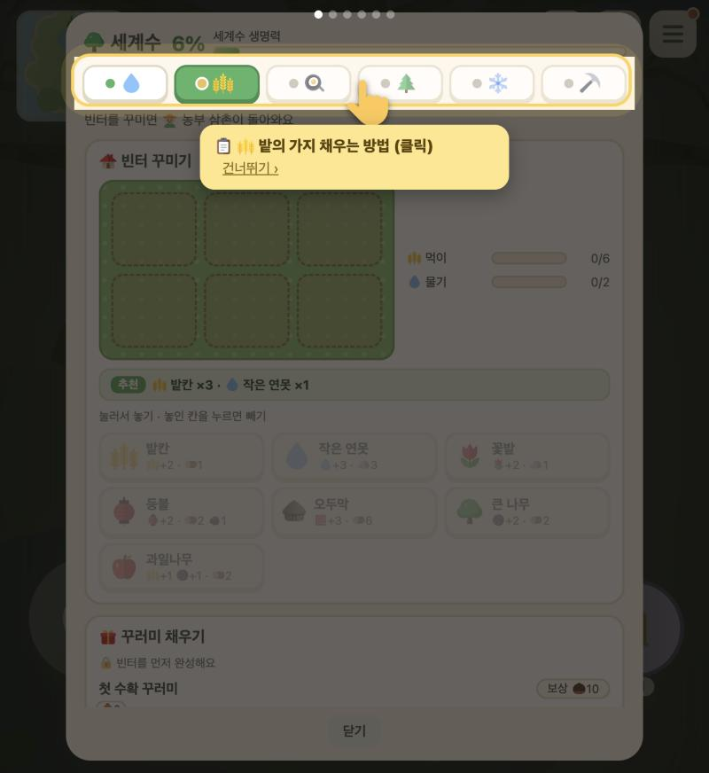
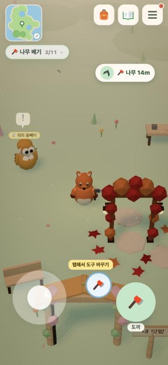
애드몹은 어디에, 어떻게 보상형만, 재료가 모자라 막힌 곳에만
원칙: 길을 몰라 막힌 곳은 이번 안내로 고치고 광고는 안 붙입니다. 재료가 모자라 멈춘 두 관문에만 "광고 보고 모자란 만큼 받기"를 붙입니다. 밭 시작 · 첫 5분 · 출구 안내 · 시네마틱에는 광고가 없습니다.
① 집 바닥 (목재 15)
- 뜨는 때
- 집 터에서 망치를 든 상태, 집 0단계, 목재가 15 미만
- 주는 것
- 모자란 목재(15 − 보유, 최대 10)
- 자리
- 집 터 근처 HUD 버튼 하나. 집 안내 실험 나침반과 겹치지 않게 아래쪽
- 근거
- 5분 넘게 머물고도 목재가 모자란 채 멈춘 기기 5대(앱 3)
② 밭의 가지 서식지 (먹이 6 · 물기 2)
- 뜨는 때
- 세계수 판 밭 탭에서 연못류를 고르는데 돌이 모자랄 때
- 주는 것
- 그 장식 1개분 돌(3~4)
- 자리
- 판의 추천 줄 바로 아래, 장식 카드의 "돌 부족" 자리
- 근거
- 밭 서식지에서 돌 0개로 멈춘 기기 3대
| 공통 규칙 | 내용 |
|---|---|
| 횟수 | 두 자리 합쳐 하루 2번, 한국 시간 자정에 초기화. 같은 관문은 넘으면 다시 안 뜸 |
| 지급 | 끝까지 봤을 때만. 건너뛰기 · 실패 · 채울 광고 없음이면 안내 문구만 |
| 플랫폼 | 안드로이드 · iOS = 애드몹 보상형(showRewarded('house') 등, 기반 코드 완료). 토스 = 토스 광고. 웹 = 애드센스 승인 전까지 버튼 숨김 |
| 실험 | 기기 단위 50:50. 대조군은 버튼만 안 보이고, 조건을 만난 순간은 두 군 모두 prepass_eligible로 기록 |
| 지표 | 관문 통과율 · D1/D7 재방문 · 광고 1회 수익(valueMicros) · 1인당 하루 시청 상한 위반 0 |
붙이는 순서
- 이번 안내 변경을 5곳에 배포. 튜토리얼 순서 바뀐 날짜를 집 안내 실험 기록에 남김
- 1주 동안 두 관문의 통과율 기준선을 다시 잼(안내만으로 얼마나 풀리는지)
- 애드몹 콘솔 동의 메시지 게시 · ATT 문구 확정 · 개인정보 처리방침 수정(사용자 몫)
- 문구 후보 검수 → 두 버튼 구현 → 앱 빌드에 실험 켜기
- 판정은 미리 정한 규칙대로(통과율이 오르고 재방문이 떨어지지 않으면 채택)
안내와 광고를 같이 내보내면 관문 통과율이 오른 게 둘 중 무엇 덕인지 가를 수 없어서, 순서를 지킵니다.